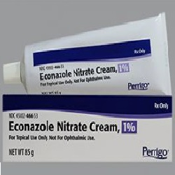

Econazole

Azoleအုပ္စုဝင္ေဆးတစ္မ်ိဳးျဖစ္ပါတယ္။
မႈိေရာဂါပိုးမ်ား ပြားမ်ားျခင္းကို တားဆီးေပးျခင္းျဖင့္ မႈိစဲြနာအတြက္ သံုးပါတယ္။ ပိုးပြားႏႈန္းနဲ႔ ပ်ံ႕ႏႈန္းကိုေလွ်ာ့ခ်ေပးၿပီး မိႈစဲြလကၡဏာကို သက္သာေစပါတယ္။
လိမ္းေဆး၊ ေသာက္ေဆး၊ ေဆးရည္ ပံုစံအမ်ိဳးမ်ိဳး ရွိပါတယ္။
ဘယ္မွာသံုးလဲ
- ေျခေခ်ာင္းၾကားမွိုစဲြျခင္း
- အျခားမႈ စဲြယားနာမ်ား
ဘယ္လိုသံုးရမလဲ
- လိမ္းေဆးအေနႏွင့္ အသံုးျပဳပါတယ္။
- ဆရာဝန္ညႊန္ၾကားသည့္အတိုင္း အသံုးျပဳႏိုင္ပါတယ္။
- အေရျပားေပၚတြင္သာလိမ္းပါ
- ေဆးလိမ္းၿပီးေသာအခါ လက္ကို ေသခ်ာစြာျပန္ေဆးပါ။ လိမ္းထားေသာေနရာကို ဆရာဝန္ညႊန္ၾကားသည္မွ လဲြ၍ အုပ္ထားျခင္း၊ ပတ္တီးစီးထားျခင္း မျပဳပါႏွင့္။
- ေရာဂါသက္သာသည္အထိ ပံုမွန္အသံုးျပဳရန္ လိုအပ္ပါတယ္။
မ်က္လံုး၊ ႏွာေခါင္း၊ ပါးစပ္၊ မိန္းမကိုယ္ စသည္တို႔ အတြင္းပိုင္းႏွင့္ ေဆးထိေတြ႕မႈရိွလွ်င္ေရျဖင့္ စင္ၾကယ္ေအာင္ ျပန္ေဆးပါ။
ေဘးထြက္ဆိုးက်ိဳးဘာေတြရွိလဲ
- လူအမ်ားစုမွာ ေဘးထြက္ဆိုးက်ဳိး ဆိုးဆိုးဝါးဝါး ခံစားရေလ့မရိွပါ။
ေအာက္ပါအခ်က္မ်ားရိွလာလ်င္ ဆရာဝန္ဆီခ်က္ခ်င္းသြားသင့္ပါတယ္။
- ေဆးမတည့္ျခင္း(ယားယံျခင္း၊ ေရာင္ရမ္းျခင္း၊ အင္ပ်ဥ္ထျခင္း)
- ေဆးလိမ္းေသာေနရာတြင္ ပူေလာက္ျခင္း၊ စပ္ျခင္း တို႔ျဖစ္ေပၚက ဆရာဝန္ႏွင့္ျပန္ျပပါ။
ဘာေတြသတိထားရမလဲ
- ေဆးတစ္မ်ိဳးမ်ိဳးႏွင့္ ဓာတ္မတည့္ျဖစ္ဖူးလွ်င္ ဆရာဝန္ကိုေျပာျပပါ။
- မိမိေသာက္ေနေသာေဆးမ်ား၊ ခံစားေနရေသာ ေရာဂါမ်ားကို ဆရာဝန္ကို ေျပာျပထားရပါမယ္္။
- ကိုယ္ဝန္ေဆာင္ႏွင့္ ႏို႔တိုက္မိခင္မ်ားတြင္ ဤေဆးကိုသံုးရန္ အေၾကာင္းရင္း ခိုင္မာမွသာ သံုးသင့္ပါတယ္။
ေဆးအာနိသင္ဘယ္လိုရွိလဲ
- လိမ္းေဆးအေနႏွင့္ အသံုးမ်ားျခင္းေၾကာင့္ အျခားေဆးမ်ားႏွင့္ အျပန္အလွန္သက္ေရာက္မႈ နည္းပါတယ္။
- မိမိအသံုးျပဳေနေသာ ေဆးမ်ားကို ဆရာဝန္ကို ေျပာျပထားရပါမယ္္။
ေဆးေသာက္လြန္ရင္ဘာေတြျဖစ္မလဲ
- ေဆးအရိွန္လြန္ၿပီး အသက္ရႈက်ပ္ျခင္း၊ သတိေမ့ျခင္းတို႔ ျဖစ္ပါက အေရးေပၚ ကုသမႈလိုပါတယ္။
- ေဆးေတြကို ဘယ္ေဆးမဆို ဆရာ၀န္ ဒါမွမဟုတ္ တတ္ကၽြမ္းနားလည္တဲ့ က်န္းမာေရး၀န္ထမ္းေတြရဲ႕ ညႊန္ၾကားခ်က္အတိုင္း တိတိက်က် ေသာက္သင့္ပါတယ္။
- မိမိသေဘာနဲ႔ေဆးရပ္လိုက္တာမ်ဳိး မလုပ္သင့္ပါဘူး။
- ေဘးထြက္ဆိုးက်ဳိး ျပင္းျပင္းထန္ထန္ ခံစားရရင္ေတာ့ ဆရာ၀န္နဲ႔တိုင္ပင္ဖို႔ လိုအပ္ပါတယ္။
Source– ေဒါက္တာခ်စ္စႏီၵေက်ာ္